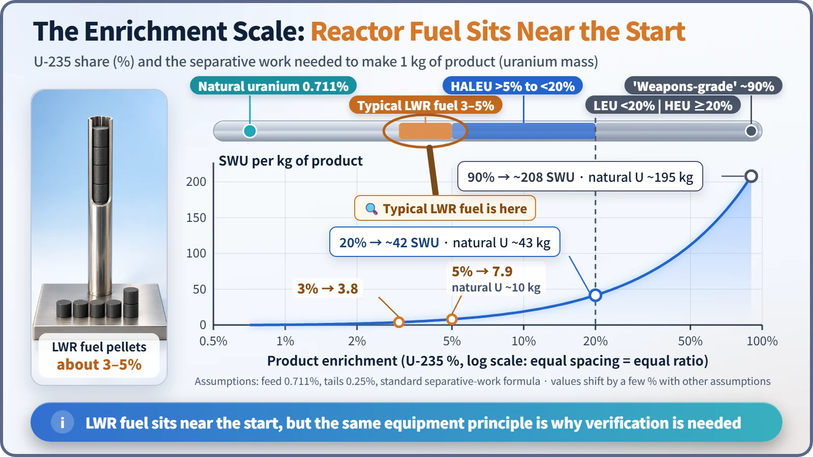
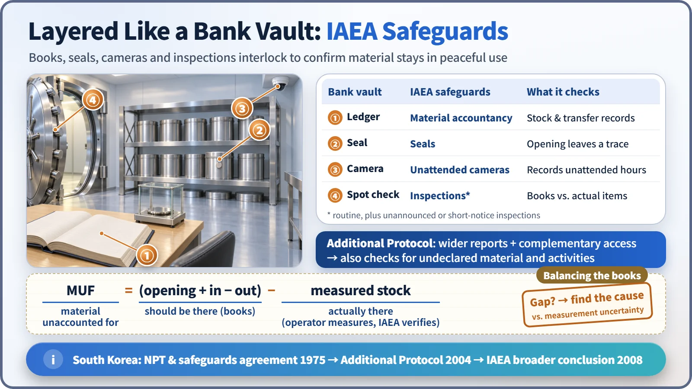

Society, Environment & the Future · 298
Uranium Watched Like a Bank Vault — Nuclear Non-Proliferation and Nuclear Technology
Ledgers, seals, cameras and inspections: how the world checks that nuclear material stays in peaceful use, without banning nuclear energy.
Nuclear non-proliferation is not a ban on nuclear energy. It is a set of international commitments, led by the NPT, that guarantees peaceful use on the condition of verification: the IAEA independently checks, through ledgers, seals, cameras and inspections, that declared nuclear material stays in peaceful use and that nothing undeclared exists. [1]
Four numbers: 0.7, 4, 20, 90
All four are percentages, and all describe the same material: what share of a lump of uranium is uranium-235, the kind that splits easily. Depending on where that number falls, the uranium can be fuel for a power plant, or one of the materials the international community watches most strictly. That is what nuclear non-proliferation is about: keeping nuclear weapons and the materials for them from spreading, while guaranteeing the peaceful use of nuclear energy.
The same knife lives in the kitchen: "dual use"
A kitchen knife is a cooking tool, but misused it becomes dangerous. Nuclear technology has a similar character, called dual use: the same technology can serve both peaceful and military purposes. Two dual-use technologies stand out.
The first is enrichment. Natural uranium contains only about 0.7% uranium-235, so reactors that use ordinary water, such as the light water reactors common in South Korea, run on fuel with that share raised to about 3–5%. The same kind of facility, with more stages, could in theory reach higher enrichment, so not only enriched material but also enrichment facilities are controlled as sensitive technology.
The second is plutonium separation. When uranium-238 absorbs a neutron inside a reactor, plutonium forms and remains in the spent fuel, mixed with highly radioactive substances. Extracting it chemically through reprocessing makes it usable as recycled fuel, but also for military purposes, so it too is strictly controlled.
Four stops on the ruler
| Category | Uranium-235 share | Notes |
|---|---|---|
| Natural uranium | about 0.7% (0.711%) | Heavy water reactors use it as is |
| Light water reactor fuel | 3–5% | Typical power-reactor fuel |
| HALEU (high-assay low-enriched uranium) | above 5%, below 20% | Candidate fuel for some small modular and advanced reactors |
| LEU / HEU dividing line | 20% | IAEA definition: below 20% is LEU, 20% or more is HEU |
| "Weapons-grade" | about 90% | Common term in open literature |

A common misconception is that "if you make power-plant fuel just a little richer, it becomes a weapon." That is not how it works. The work of enrichment is measured in separative work units (SWU). Under the same conditions, 1 kg of product takes about 8 SWU at 5%, about 42 SWU at 20% and about 208 SWU at 90%, and the natural uranium feed climbs to about 10 kg, 43 kg and 195 kg. Power-plant fuel sits right near the start of the ruler. [2]
That distance is no reason for complacency. Because the facilities work on the same principle, someone has to keep checking which number a facility is heading toward.
One promise on paper: the NPT
The starting point is the Treaty on the Non-Proliferation of Nuclear Weapons (NPT). It entered into force in 1970, and 191 countries are now parties. It stands on three pillars: non-proliferation; disarmament by the states that already have nuclear weapons; and the right of all parties to the peaceful use of nuclear energy. [3]
So non-proliferation is closer to a promise that guarantees peaceful use on the condition of verification. Every party without nuclear weapons concludes a safeguards agreement with the IAEA and must declare all of its nuclear material and have it verified.
Managing it like a bank vault: IAEA safeguards
That verification is called safeguards. It is different from nuclear safety, which prevents accidents, and nuclear security, which prevents theft and terrorism. Its purpose is for an international organization to confirm independently that declared nuclear material has not been diverted from peaceful use, and that there is no undeclared material or activity. A bank vault makes the structure easy to see:
- The ledger: the plant records its nuclear material inventory and every movement in and out, and the state reports to the IAEA. This is nuclear material accountancy.
- Seals: like a seal on a vault door, seals on fuel storage areas leave a trace if anyone opens them.
- Security cameras: unattended cameras keep recording when no one is around, filling the blank time between the books and the physical items.
- Spot checks: IAEA inspectors visit regularly, sometimes unannounced or on short notice, and match the books against the actual material.

Matching the books to reality works like this: material unaccounted for = (opening inventory + receipts − shipments) − measured inventory. Measurements always carry some error, so the result may not be exactly zero. The difference is evaluated together with the measurement uncertainty, and any unexplained difference is followed up. [1]
The analogy has a limit. A bank vault exists mainly to stop thieves, while safeguards are about the international community confirming that a state keeps its promises. That is why the Additional Protocol was created in 1997: it widens declarations to related research and manufacturing activities and allows access, for confirmation, even to places that were not declared. The auditors may now walk through the whole bank building, not just the vault.
How South Korea does it
South Korea ratified the NPT in 1975, and its comprehensive safeguards agreement with the IAEA entered into force the same year. Its Additional Protocol has been in force since 2004. In 2008 it received the IAEA's "broader conclusion": no indication of diversion of declared material and no indication of undeclared material or activities, a conclusion maintained every year since. [4]
Domestically, the Korea Institute of Nuclear Nonproliferation and Control (KINAC), under the Nuclear Safety and Security Commission, handles national accountancy and inspections. For a plant operator, keeping an accurate nuclear material ledger and hosting inspections is part of everyday operations.
Key takeaways
Nuclear technology is dual-use along two paths, enrichment and plutonium separation. On top of the NPT promise, the international community has layered ledgers, seals, cameras, inspections and the Additional Protocol into one verification system. Non-proliferation is not a fence that blocks nuclear energy; it is a transparent way of managing the vault that lets everyone trust nuclear energy enough to use it.